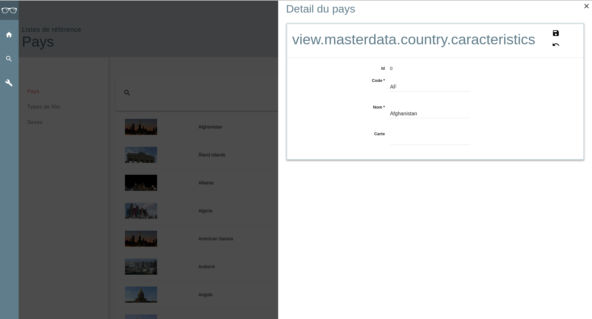

Implémenter une liste administrable
Durée estimée (1h)
Objectifs
L'objectif de cette page est de pouvoir afficher une liste potentiellement très longue. Il sera possible de
- Editer ligne par ligne dans une fenêtre glissante qui apparaîtra depuis la droite de l'écran.
- Rafraichir les éléments de la liste en sortie d'édition d'un élément. Il est possible de mettre en place un filtre afin d'afiner les éléments affichés de la liste.
L'API utilisée afin de communiquer avec le serveur est calée sur celle du moteur de recherche.
Normalement vous devriez avoir une page qui ressemble à ça à la fin:
- Le mode liste

- Le mode édition d'une ligne

Concepts et composants qui seront manipulés
- Le store de liste de
focus-coreaccessible dansfocus-core/src/store/list. Le store de liste aura la structure suivante :criteria, // Le critère éventuel de recherche qui doit être un objet structuré sortBy, (Par quel élement est ce la liste est triée) sortAsc, (Le caractère ascendant ou non pour le tri) dataList, // Les élements de la liste (une partie au moins s'il y a pagination) totalCount // Le nombre total d'éléments de la liste (utile pour réaliser la pagination) - Le builder d'action qui permet de créer deux choses:
- Une action qui sera appellée par le composant intelligenr de liste a chaque fois qu'un changement est opéré dans le store de la liste
- Une fonction qui permet de dispatcher de nouveaux élements dans le store.
- Le composant intelligent qui est responsable de gérer l'affichage de la liste
focus-components/page/list - le composant d'affichage d'une liste dans focus qui est
focus-components/list/selection/list
Il est important de comprender à ce niveau que parmi tous les composants que vous allez créer, seul de composant intelligent de liste effectuera des requêtes à l'API afin de récupérer les données de la liste. Les autres composants auront juste pour tâche de mettre à jour le store de liste en fonction des cas d'usages.
Commencons par créer la liste en mode pas à pas
Dans notre exemple nous allons créer une page d'administration de pays. La première partie n'est pas compliquée et est surtout de la configuration à réaliser.
Création du store de liste
Dans le dossier store de votre application créer un fichier country-list.js.
// on récupère le store de liste de Focus
import ListStore from 'focus-core/store/list';
// On crée une instance de ce store avec un identifiant unique
const countryListStore= new ListStore({identifier: 'countryList'});
// Nous lui donnons un nom afin d'aider pour les messages de debug.
// Ce n'est pas obligatoire mais c'est mieux.
countryListStore.name = 'CountryListStore';
// On exporte ce store vers l'extérieur
export default countryListStore;
Création du service js qui sera en charge d'appeller le serveur
Nous allons créer un fichier pour ce service qui aura la signature suivante function loadCountryListByCriteria({data: bodyData, urlData})
Ensuite nous allons utiliser les paramêtres suivants:
const {criteria} = bodyData;
const {skip, top, sortBy, sortAsc} = urlData;
Que nous allons pouvoir utiliser afin de construire l'url directement avec ce que nous récupérons en entrée du service.
return fetch(searchUrlBuilder({bodyData, urlData}));
Le webservice doit nécessairement nous renvoyer un objet de la forme suivante:
{
dataList: [{id: 1, ...}, ...],
totalCount: XXX
}
Si ce n'est pas le cas (par exemple pour une liste courte et de taille fixe ) et que vous avez directement les data, n'oubliez pas que le type de retour est une promesse qui est par définition chainable.
Vous pouvez donc faire la chose suivante: fetch().then(data => {dataList: data, totalCount: data.length}). Mais il est préférable que votre serveur vous retourne un objet déjà bien construit.
Création de l'action de recherche et de la fonction de dispatch
Créer un fichier pour les actions liées à votre entité
//On récupère le constructeur d'action de liste
import listActionBuilder from 'focus-core/list/action-builder'
// onrécupère le store de liste que l'on vient de créer
import countryListStore from '../stores/country-list';
// On récupère le service de chargement de liste que l'on vient de créer
import {loadCountryListByCriteria} from '../services/country';
// On utilise le builder.
const listActions = listActionBuilder({
service: loadCountryListByCriteria,
identifier: 'countryList',
getListOptions: () => countryListStore.getValue() } // Une fonction pour récupérer les parties liées à la pagination
);
export const loadCountryList = listActions.load; // On exporte l'action de load de la liste
export const updateCountyListProperties = listActions.updateProperties;
// On exporte une fonction pour mettre à jour les élements du store.
On a maintentant tout ce qu'il nous faut afin de créer le composant.
Création des compoants
Création du composant de plus haut niveau
Ce composant aura la structure suivante
() => {
<div>
<CountryCriteria/> // le filtre de liste de pays
<CountrySmartList/> // La liste intelligente de pays
<Modal/> // la page de détail pouvant s'ouvrir
<CountryDetail/>
</Modal>
</div>
}
Nous avons donc un composant de haut niveau qui aura la forme suivante
import React, {Component} from 'react';
import {component as Modal} from 'focus-components/application/popin';
import CountryList from './country-list';
//import CountryActionBar from './country-action-bar';
import {loadCountryList, updateCountyListProperties} from '../../../action/country';
import countryListStore from '../../../stores/country-list';
// Page which stands for the administration
class MasterdataCountry extends Component {
render() {
return (
<div data-demo='masterdata-countries'>
<CountryList
action={loadCountryList}
handleLineClick={d => this.setState({detailId: d.id})}
store={countryListStore} />
</div>
);
}
}
MasterdataCountry.displayName = 'MasterdataCountry';
export default MasterdataCountry;
Nous allons commencer par créer le composant de smart list.
Composant de smart list
import React, {Component, PropTypes} from 'react';
// On récupère la liste intelligente de Focus
import {component as SmartList} from 'focus-components/page/list';
// On récupère la liste de focus
import {component as ListComponent} from 'focus-components/list/selection/list'
// On récupère la ligne de la liste
import CountryLine from './country-line';
// Proptypes servent à la validation des props du composant
const propTypes = {
action: PropTypes.func,
columns: PropTypes.array,
handleLineClick: PropTypes.func.isRequired,
store: PropTypes.object
};
// Composant wrapper qui permet de récupérer des informations du parent.
// Ce composant est une fonction pure et ne possède pas de cycle de vie.
function CountryList({handleLineClick, action, store, columns}) {
const loadListAction = {load: action};
return (
<SmartList
action={load: action} // L'action qui charge la liste
columns={columns} // Les colonnes à afficher
isSelection={false} // Dire à la liste qu'elle n'est pas sélectionnable
ListComponent={ListComponent} // Le composant d'affichage de liste à utiliser.
LineComponent={CountryLine} // La ligne à utliser dans la liste
onLineClick={handleLineClick} // Le handler de click sur la ligne
store={store} // Le store sur lequel le composant doit s'abonner.
/>
);
};
// Le display name pour le debug.
CountryList.displayName = 'CountryList';
// Les propTypes
CountryList.propTypes = propTypes;
export default CountryList;
Afin de créer ce composant nous avons besoin de la liste nous avons besoin de créer la ligne.
Création de la ligne
Nous allons maintenant créer le contenu de la ligne. Nous avons besoin d'aller chercher les définitions de l'entité ou de la ligne qui contiennent l'ensemble des métadonnées associées à chacun de champ de la ligne.
//librairies
import React from 'react';
// Nous allons chercher le preset de ligne
import {mixin as LinePreset} from 'focus-components/list/selection/line'
const CountryLine = React.createClass({
displayName: 'CountryLine', //Nom du composant pour le debug
mixins: [LinePreset], // Permet d'apporter un comportement à la ligne.
definitionPath: 'country', // Définition de notre entité
renderLineContent() { // rendu du contenu de la ligne.
return (
<div data-demo='country-line-content'>
<div className='img'><img src={this.props.data.img} /></div>
{this.textFor('name')} {/* Utilisation des helper de vue apporté par le preset*/}
{this.textFor('code')}
</div>
);
}
});
export default CountryLine;
La ligne est maintenant créé la liste doit maintenant être fonctionnelle. Nous allons maintenant ajouter la modale contenant la page de détail.
Modale contenant la page de détail
Nous allons ici créer une page de détail. Vous pouvez vous reporter au tutorial sur les formulaires afon de voir comment procéder. La logique est strictement identique à celle de création d'un block de détail. Voir page de détail
//librairies
import React from 'react';
import {translate} from 'focus-core/translation';
import Panel from 'focus-components/components/panel';
import {mixin as formPreset} from 'focus-components/common/form'; // Preset contenant l'ensemble des informations du formulaire.
//stores & actions
import countryStore from '../../../stores/country';
import {countryActions} from '../../../action/country'
export default React.createClass({
displayName: 'Country',
mixins: [formPreset],// Preset de formulaire
definitionPath: 'country',
stores: [{store: countryStore, properties: ['informations']}], // Store écoutés
action: countryActions, // Actions de chargement et de sauvegarde d'un pays
/** @inheritDoc */
renderContent() {
return (
<div>
<h4>{translate('country.detail.title')}</h4>
<Panel actions={this._renderActions} title='view.masterdata.country.caracteristics'>
{this.displayFor('id')} {/*Affichage du champ id*/}
{this.fieldFor('code')}
{this.fieldFor('name')}
{this.fieldFor('maps')}
</Panel>
</div>
);
}
});
Cette page doit maintenant être ajoutée dans la page principale de la liste .
Nous avons donc besoin d'ajouter dans la page principale:
- Une Modale
- Une gestion de l'ouverture et de la fermeture de la modale.
Nous allons donc dans le composant parent, ajouter dans le state l'identifiant de la ligne sélectionné lorsqu'on clique sur une des lignes. Si cet id est présent dans le state alors on affiche une modale sinon non. Ainsi la modale sera abscente du DOM Javascript lorsqu'aucune ligne n'est selectionnée.
constructor(props){
super(props);
//initialisation du state
// Initial state
this.state = {
detailId: null
};
}
// Methode qui sera appellée à la fermeture de la modale.
_onDetailPopinClose = () => {
//Remove the detailId and call the list load action.
this.setState({detailId: null}, () => loadCountryList());
};
Nous allons maintenant gérer l'affichage de la modale en fonction de la présence de l'id.
render() {
// Get the id from the state
const {detailId} = this.state;
return (
<div data-demo='masterdata-countries'>
<CountryList
action={loadCountryList}
handleLineClick={d => this.setState({detailId: d.id})}
store={countryListStore} />
{
/*
Affichage de la popin uniquement si l'id est présent
*/
detailId !== null &&
<Modal
onPopinClose={this._onDetailPopinClose}
open={true} /* Elle est ouverte par défaut*/
type='from-right'>
/* On insère le composant de détail et on le démarre en mode edit.*/
<CountryDetail id={detailId} isEdit={true}/>
</Modal>
}
</div>
);
}
Il nous reste maintenant à ajouter (ceci est optionnel) un filtre de recherche.
Ajout du filtre de recherche
On va créer un filtre de recherche. La logique de ce composant est d'avoir un texte à saisir et une action à appeller lorsque ce texte est modifié.
Le composant va donc prendre en entrée un props onFilterChange
La logique de ce composant serait la même si nous souhaitions faire une barre d'action afin de trier les éléments.
import React, {PropTypes} from 'react';
// Utilisation de la fonction debounce afin de temporiser la frappe de l'utilisateur.
import {debounce} from 'lodash/function';
import {translate} from 'focus-core/translation';
// Composant d'input avec un icone. Il est possible d'utiliser un composant input classique.
// Le résultat serait identique.
import InputExpandableText from '../../components/input/text-expandable';
const propTypes = {
onFilterChange: PropTypes.func.isRequired
};
// On utlise une fonction pure car ce composant n'a aucune logique.
// Il ne fait qu'appeller une action lorqu'il a une nouvelle valeur.
function CountryCriteria({onFilterChange}) {
const _onSearchDebounced = debounce(value => onFilterChange(value), 200);
return (
<div data-demo='country-criteria'>
<InputExpandableText
onChange={value => _onSearchDebounced(value)}
placeholder={translate('countryList.filter')}
type='search'
name='search'
expandIcon='search'
/>
</div>
);
};
CountryCriteria.propTypes = propTypes;
export default CountryCriteria;
Nous devons maintenant ajouter ce composant dans le composant principal.
Nous devons ajouter une fonction qui permettra de dispatcher le query de recherche.
import {loadCountryList, updateCountyListProperties} from '../../../action/country';
//Allow us to dispatch informations in the store using the built in action
function _dispatchSearchCriteria(query) {
updateCountyListProperties({criteria: query});
}
Ajout dans le render :
render() {
const {detailId} = this.state;
return (
<div data-demo='masterdata-countries'>
<CountryCriteria onFilterChange={_dispatchSearchCriteria} />
...
</div>
);
}
Composant principal final
import React, {Component} from 'react';
import {component as Modal} from 'focus-components/application/popin';
// import {setHeader} from 'focus-core/application'
import {translate} from 'focus-core/translation';
import CountryList from './country-list';
import CountryDetail from './country-detail';
import CountryCriteria from './country-criteria';
//import CountryActionBar from './country-action-bar';
import {loadCountryList, updateCountyListProperties} from '../../../action/country';
import countryListStore from '../../../stores/country-list';
//Allow us to dispatch informations in the store using the built in action
function _dispatchSearchCriteria(query) {
updateCountyListProperties({criteria: query});
}
// Page which stands for the administration
class MasterdataCountry extends Component {
constructor(props){
super(props);
// Initial state
this.state = {
detailId: null
};
}
_onDetailPopinClose = () => {
//Remove the detailId and call the list load action.
this.setState({detailId: null}, () => loadCountryList());
};
render() {
const {detailId} = this.state;
return (
<div data-demo='masterdata-countries'>
<CountryCriteria onFilterChange={_dispatchSearchCriteria} />
{/*LIST : This is the list which trigger the search and is connected to the list store */}
<CountryList
action={loadCountryList}
handleLineClick={d => this.setState({detailId: d.id})}
store={countryListStore} />
{
/*
When it is in the state, the popin is automatically displayed
The detail popin is handled by this id
*/
detailId !== null &&
<Modal
onPopinClose={this._onDetailPopinClose}
open={true}
type='from-right'>
<CountryDetail id={detailId} isEdit={true}/>
</Modal>
}
</div>
);
}
}
MasterdataCountry.displayName = 'MasterdataCountry';
export default MasterdataCountry;
Il ne reste plus qu'à le mapper correctement à une route de votre application. Mais ça ne fait pas partie de votre tuto.
Mutualisation à l'échelle d'un projet
Si vous avez dans votre projet plus de 10 listes administrables, il peut devenir intéressant de créer un composant au dessus de ces listes qui ne prendrait que le store et l'action et la ligne en paramètre. Ainsi ce composant sera industriialisé pour votre projet. Nous n'avons pas fait ce choix dans focus afin de conserver de la souplesse dans l'affichage des listes en fonction des projets et de la présence ou non de certains éléments (filtre de recherche / barre d'actio de tri, ...), forme de listes et des lignes.